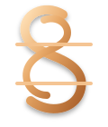

نگاه من به ساختن
برای من برنامهنویسی فقط نوشتن کد نیست؛ ترکیبی از فکر کردن، آزمودن، اصلاح کردن و ساختن تجربهای بهتر برای کاربر است.

sheymon. مشاهده پروژهها ↙من توسعهدهنده نرمافزارم؛ عاشق ساخت ابزارهایی که فقط قشنگ نیستند، بلکه واقعاً به درد میخورند. اینجا مجموعهای از پروژهها، تجربهها و مسیر یادگیری من را میبینی.
توسعهدهندهای که از تبدیل مسئلههای واقعی به نرمافزارهای ساده، سریع و قابلاستفاده لذت میبرد.
برای من برنامهنویسی فقط نوشتن کد نیست؛ ترکیبی از فکر کردن، آزمودن، اصلاح کردن و ساختن تجربهای بهتر برای کاربر است.
ساخت محصولات کاربردی در حوزه نرمافزارهای دسکتاپ، موبایل و وب؛ با تمرکز روی تجربه کاربری، ساختار تمیز و عملکرد قابلاعتماد.
هر پروژه فرصتی است برای یادگیری یک مهارت تازه، پیدا کردن راه بهتر و نزدیکتر شدن به محصولی که واقعاً ارزش استفاده کردن دارد.
نمونههایی از پروژههای شخصی و در حال توسعه من.
حسابداری و انبارداری
اپلیکیشن حسابداری فروشگاهی با تمرکز بر فاکتور، موجودی کالا، اشخاص و گزارشهای مالی؛ با هدف تجربهای منظم و قابلاعتماد.
ابزار تحلیل بازار رمزارز
برنامه دسکتاپ برای نمایش نمودارها و اندیکاتورهای تحلیل تکنیکال؛ با تمرکز بر دادههای بازار و تحلیل قابلفهم.
وبسایت شخصی
پورتفولیوی شخصی با طراحی شیشهای و رنگهای کاراملی برای معرفی مهارتها، پروژهها و مسیر کاری.
ایده ابزار پایش سیستم
طرح مفهومی ابزاری برای نمایش وضعیت سیستم، دما و اطلاعات عملکرد؛ ایدهای برای بررسی و توسعه بیشتر.
✦ این فهرست اولیه است؛ هر زمان پروژه جدیدی ساختی، میتوانیم کارت و توضیحاتش را به همین صفحه اضافه کنیم.
مهارتها و فناوریهایی که در پروژهها استفاده میکنم یا در مسیر یادگیری آنها هستم.
برای همکاری، پیشنهاد پروژه یا فقط یک گفتوگوی فنی، از راه ایمیل با من در ارتباط باش.
ارسال ایمیل ↗